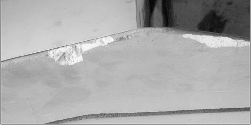
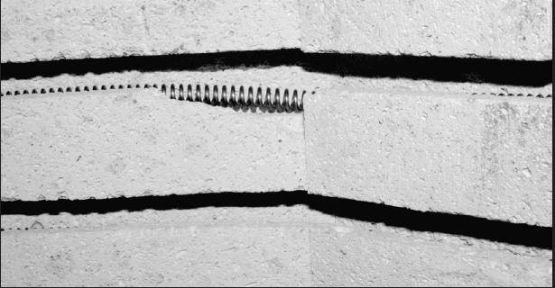
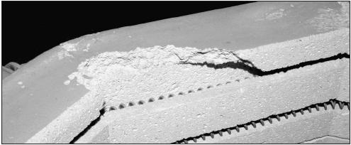
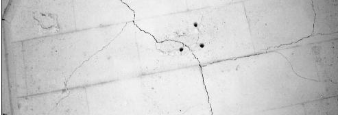
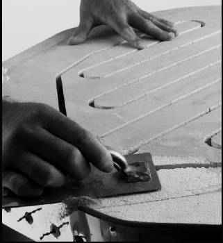
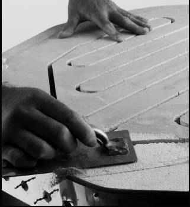

Korjauslaastin menetelmät
Tiilien tehtävänä on
1) eristää polttokammio
2) Kannattaa vastuksia.
Älä korjaa vaurioituneita tiiliä niin kauan kun ne täyttävät molemmat tehtävänsä.
(poikkeus, jos katon tiilistä valuu pölyä).
Useimmat tiilien vauriot ovat kosmeettisia eivätkä vaikuta polttamiseen.
Esimerkkejä kosmeettisista vaurioista:

Pieni vaurio kannen reunassa.
Siitä ei varise pölyä työlle.
|

Tämäkin on pikkuvika
vastus pysyy vielä hyvin urassaan
|

Vaurioitunutta arkku-uunin reunatiiltä
ei tarvitse vaihtaa, jos jäljellä on n4 cm ehjää pintaa
|

pohjan pikkuhalkeamat tiivistyvät
kun uuni kuumenee
|
Eräitä syitä korjata tiiliä:
Kannen pinnoittaminen
Päältä avattavan uunin kannen ja ylimmän tiilikerroksen laidoilla voi
pinnoittaa kestämään paremmin kulutusta.
Liquid Kiln Coating on tulenkestävä sementti jonka olemme kehittäneet
tiilikansien pinnoittamiseen täällä tehtaalla.
( Fiiberivuorattujenuunien ovi tai kansi ei kaipaa pinnoitusta, eikä tiiliuunien ovi.)
Pinnoitus kovettaa ja suojaa tiilien pintaa. Pinnoitus kestää monta polttokertaa,
vaikka se näyttää häviävänensimmäisessä poltossa.
Älä kuumenna uunia ennenkuin pinnoite on täysin kuiva.
Jos pinnotetta roiskahtaa elementin päälle, pyyhi pois mahdollisimman hyvin.
Jos pinnoitetta on liian paksulti, se hilseilee polton jälkeen. Hio vaurioitunut kohta
ja lisää pinnoitetta paljaaseen tiileen.
 

Hio hilseillyt kohta puhtaaksi
Jos olet pinnoittamassa juuri paikattua tiilipintaa, anna laastipaikan kuivua ensin.
Liquid Kiln Coating käyttöohje
1. Ravistele pulloa kunnes Liquid Coating on täysin sekoittunut. Kaada sitä hiukan laakeaan astiaan.
Sekoita astiassakin aina ennen kun sivelet tiilipinnalle.
2. levitä pinnoite suurella pehmeällä sienellä, samanlaisella kuin esim.tapetoinnissa.
Kostuta sieni ensin vedessä ja purista liika vesi pois.
3. Kasta kostutettu sieni astiaan. Pyyhi sienellä pinnoitetta tiiliin. Työskentele reippaasti ja pyyhi pois liika
neste. Pinnoitteen pitäisi olla niin ohut että näet tiilen pintarakenteen sen läpi.
4.Anna pinnoitteen kuivua hyvin ennen polttoa.